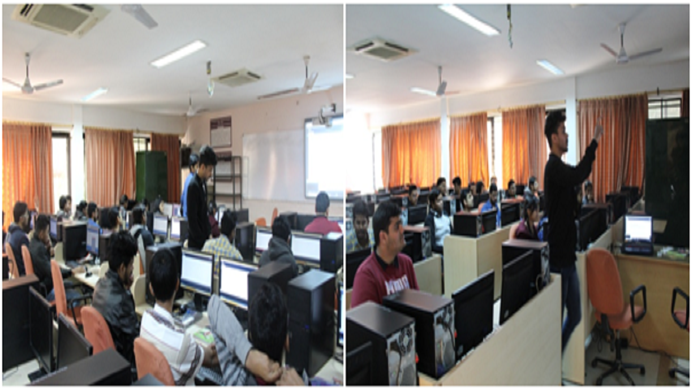

Why
Over a winter break I started learning Processing — the open-source graphics library and IDE built for artists and designers, which runs on Java with most of the ceremony stripped out. It was good enough fun that I wanted to hand it to other people.
I asked my professor and the head of department for a slot, and got three hours with second-, third- and fourth-year computer science students as part of Polaris. Seventy-seven registered; sixty-one showed up.

What we covered
We started from the bottom: opening a window, drawing circles, rectangles and polygons, and setting background and fill colours. From there into the graphics underneath — line-drawing algorithms, polygon-drawing algorithms and 2D transformations.
Then I stopped teaching and gave them twenty minutes to make anything they liked. That was the best part of the day. Students learn more when they are set loose, and the room produced genuinely good work out of a handful of primitives — which made a natural excuse to push further into motion and physics.
We finished by building a bouncing ball, then turning it into a brick-breaker game. Several people left interested in a domain they had not considered that morning, which was the entire objective.